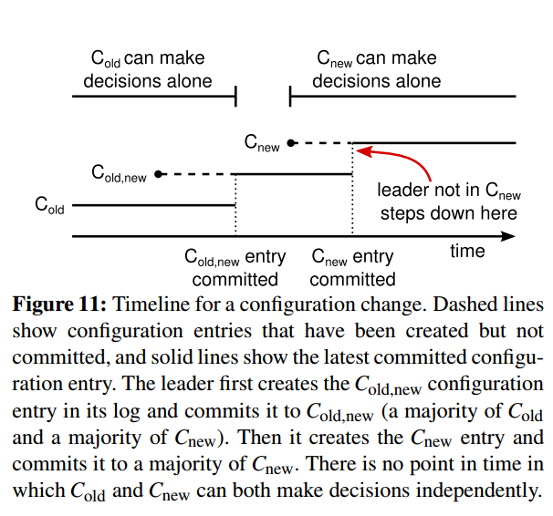

【Raft】《In Search of an Understandable Consensus Algorithm》笔记
[TOC]
背景
在学习6.824时候lab2需要研究分布式一致性算法,课程为了方便学生理解,算法由Paxos改成Raft。本文是在阅读《In Search of an Understandable Consensus Algorithm》Extended版的一些笔记,方便加深理解和后续开发适合回头查阅。
Raft
特点:
+ Strong leader: Raft比其他一致性算法使用更强的Leadership,比如日志记录只能从leader流到其他节点.
+ Leader election: Raft使用随机时钟来选举Leader。通常一致性算法会使用心跳来控制Leader选举,Raft增加了随机时钟功能可以简单快速解决选举冲突
+ Membership changes: 在成员关系发生变更的时候往往最容易产生冲突,Raft增加了joint consensus算法(引入新状态,后续会描述)来解决过渡阶段发生的冲突,这使得集群在配置变更的时候也能继续正常运行。
2 Replicatd state machines (RSM)
- 1.一致性算法通常在RSM的上下文中出现
- 2.RSM通常用于解决分布式系统中的
容错问题 - 3.部分分布式系统会用一个单独的RSM来管理
leader选举和存储一些在拯救leader崩溃的配置信息. - 4.RSM的运行是由
replicated log实现,每个服务都会包含一系列含有命令的日志,而状态机的功能就是要按顺序执行这些命令。 - 5.一致性算法的作用就是要保证
replicated log的一致性。要确保每个节点的日志都是一致的。 - 6.一致性算法执行过程:服务端中的
consensus module会从客户端接收命令并加入到日志中，并与其他服务端的consensus module通信来确保每一个日志都以相同顺序包含相同的请求。然后将这个日志发给状态机,状态机处理后将结果返回给客户端。(具体看Figure 1)
实际系统一致性算法具有以下特性:
+ 在所有非拜占庭条件(包含网络延迟、分区、网络丢包、重复以及乱序)下都要确保安全,即不能返回一个错误结果。
+ 只要占有控制权的服务可用且相互之间可以通讯，以及和客户端可以通信,那么系统必须是可用的。
+ 集群不依赖时间来确保日志的一致性。哪怕是时钟错误和极端的消息延迟在最差的情况下也只能导致系统的不可用,而不会影响日志一致性。
+ 通常情况下,当集群中占有控制权的服务已经对单一RPC做出响应时候,可以认为一个命令完成了。少数慢的服务不应该影响整个系统的性能
关于RSM深入理解可参考Implementing fault-tolerant services using the state machine approach
3 What’s wrong with Paxos?
- Paxos难以理解
- 难以落地
- 算法描述与实际需求有差异
TODO: 阅读Paxos论文再填坑 + Paxos wiki + Paxos Made Simple + CONSENSUS: BRIDGING THEORY AND PRACTICE
4 Designing for understandability
Raft设计目标: + 必须为系统的构建提供完整并且实际有效的基础(易落地) + 在所有条件下都是安全的(可用) + 在经典操作中是高效的(高性能) + 最重要的:可理解性
让一致性算法更容易理解,作者在设计时候做出了以下修改:
+ 1.将问题分解 (比如Raft算法中分解了leader election,election log,log replication,safty和membership changes几个部分,使他们可以相对独立地解释和理解)
+ 2.通过减少需要考虑的状态数量,让系统更清晰,以尽可能减少不确定性。
5 The Raft consensus algorithm
- Raft是一种用于管理RSM模型中的
replicated log的算法 - Raft总流程:
- 1.选举一个
leader来实现一致性 - 2.这个
leader负责管理整个replicated log - 3.
leader从客户端接收日志记录 - 4.
leader将这些记录备份到其他服务端上(副本分发) - 5.
leader告诉其他服务端什么时候可以安全地将日志记录加入状态机
- 1.选举一个
Raft关键特性:
+ Election Safty(选举安全): 每个选举Term,至多会有一个leader被选举出来
+ Leader Append-Only(Leader只能添加): leader从不会覆盖或者删除日志,它只能添加新的记录。
+ Log Matching: 如果两个日志包含一个拥有相同索引和内容的记录,那么从通过这个索引在两个日志里查出来的内容都相同.
+ Leader Completeness(Leader完整性): 如果一个日志记录在一个Term内已被提交,那么在比原Term编号更大的Term内leader的日志里我们都能看到这条记录。
+ State Machine Safety(状态机安全性):如果一个服务端已将日志记录应用到了状态机的指定索引上,那么其他服务端将不会把日志应用到跟这个相同的索引上。
5.1 Raft basics
- 一个Raft集群包含多个服务端,一般是
5个,因此系统能忍受2台机器的故障。 在给定任意时刻,每个服务端都只会处于以下三种状态中的一种:leader,follower,candidate。正常情况下只有一个leader,其他都是follower。
- leader: 对所有客户端的请求进行处理（若一个客户端是和follower进行交互,那么follower会将交互重定向到leader）
- follower: 被动,不会主动发送请求,指挥简单对leader和candidate的请求进行回复
- candidate: 当leader失去时候,进入选举过程时会产生本状态,用于进行选举操作
Term: >Raft 将实践划分成任意长度的Term,Term会以
连续的整数进行编号。每个Term以一个选举开始,选举阶段会有一个或者多个candidate来竞选leader,当一个candidate竞选成功后,它会成为接下来的时间的leader(如 Figure5 t1 t2)。在有些情况选举会出现split vote,导致这个选举无法选出leader。这种情况下Term会以一种没有leader状态结束(如Figure5 t3)，而新的选举会立即开始。Term在Raft中扮演一个
逻辑锁的角色,它能够让服务端去检查那些需要淘汰的信息,例如过期的leader.Current term number: 每个服务端都存储了一Current Term number,它会随着时间单调递增。Current Term会随着服务端之间的交互而改变,如果服务端发现自己的Current Term比其他服务端的都小,那么它会把自己的Current Term更新到更大的值。如果一个
candidate或leader发现其Term已过时,那么它会立即恢复到follower的状态。如果一个服务端接收到一个来自过期的Term的请求，那么服务端需要拒绝这个请求。Raft 服务间通信: Raft服务端之间都通过
RPC通信。一致型算需要两种类型的RPC。如果一个服务端没有收到回复,那么它会重发RPC,并且它们会并行发送RPC,用于提高性能.- RequestVote RPC: 由
candidate在选举期间发起 - AppendEntries RPC: 由
leader发起,用于备份日志记录(副本拷贝)和提供心跳。
- RequestVote RPC: 由
5.2 Leader election
- Leader选举触发: Raft使用一种
心跳机制来触发Leader选举。当服务端启动时候默认作为follower。服务端如果能持续地从leader或者candidate处获取合法的RPC,那么它将始终保持follower状态。leader会周期性地发送心跳包(不带有日志记录的AppendEntry RPC)给所有follower.如果一个服务端在选举超时时间段中没有收到交互信息,那么服务端会认为当前不存在一个可用的leader,然后会开始新的一轮选举。 follower参加选举:为了开始一个选举,一个follower角色的服务端会进行如下操作:- 1.增加自己的当前的
Term - 2.把自己的服务角色(Server states)从
follower转为candidate - 3.同时向集群中其他服务端发送
RequestVote RPC请求. - 4.持续当前状态直到以下情况之中一个发生:
- 1.该服务端赢得选举，成为新
leader - 2.另一个服务端宣布它是新
leader - 3.过了一段时间也没有优胜者,即无
leader存在
- 1.该服务端赢得选举，成为新
- 1.增加自己的当前的
- 赢得选举的条件:
- 1.当前服务端为
candidate状态 - 2.收到集群中
majority(绝大对数)个服务端对于同一个Term的投票
- 1.当前服务端为
- 投票比较条件:当前
Term的大小- 如果一个
candidate收到另外一个candidate宣传是leader而且对方的Term要比自己的大或者一样大的话，这个candidate会退化成为follower。反之则拒绝这个宣传,继续保持candidate
- 如果一个
- 解决每个服务端都打成平手,没有人赢得选举的问题(
splite vote):Raft使用随机的election timeout来解决。具体就是选举过程会有一个随机的超时时间(150~300ms).
5.3 Log replication
leader工作:- 1.处理客户端请求,
生成日志记录 - 2.同时把日志记录副本
拷贝到其他服务端 - 3.等待其他服务端副本都拷贝完成后让状态机`
执行这个日志 - 4.结果返回客户端
- 1.处理客户端请求,
follower工作:- 1.转化客户端请求到leader
- 2.检查如果
leader的日志记录已经提交,那么当前follower也需要将该副本让本地的状态机提交
- 日志一致性要求:
- 不同日志中的两条记录如果有相同的索引和
Term,那么他们分别存储的指令相同 - 不同日志中的两条记录如果有相同的索引和
Term,那天他们前面的日志记录也是相同的
- 不同日志中的两条记录如果有相同的索引和
- 日志不一致情况处理:
- 1.当
follwer日志记录比leader多:leader查找全部follower中日志一致的最远记录点.并删除它后面的全部日志记录。 - 2.当
follwer日志记录比leader少:leader会保存每个follower的下一个记录点索引,当follower跟不上的时候，会在每个副本拷贝周期去增加日志记录来跟上leader的记录索引。最终保持一致。
- 1.当
5.4 Safty
介绍一些方法和规则来确保状态机以同样顺序执行同样指令
1.选举限制:通过
RequestVote RPC实现约束,RPC中包含了candidate的日志信息,投票人可以根据这个日志信息判断candidate的日志是否比自己的要旧，如果要旧的话则拒绝投票. 这样可以用于防止不包含全部已提交日志记录的candidate赢得选举.- 1.日志比较条件:
- 1.日志的索引和
Term - 2.如果两个日志最后的记录点有不同的
Term那么较大的Term的记录作为新记录点。 - 3.如果两个日志都是以相同的
Term结束,那么则以log长度比较,log越长则越新
- 1.日志的索引和
- 1.日志比较条件:
2.之前
Term的日志记录提交限制:Raft从不会通过计算副本备份的数目来提交之前Term的日志记录,只有leader服务端当前Term的日志记录点才通过计算副本备份数量来提交。一旦当前Term的日志记录以这种方式被提交，根据5.3中日志一致性属性,那么之前所有的日志记录都会被间接提交。3.
leader日志完整性:所有Term大于T的leader必须包含所有来自T并且在Term T提交的日志记录。
5.5 Follower and candidate crashes
follower或者candidate奔溃处理方法:如果一个follower或者candidate崩溃了，那么之后发送给它的RequestVote和AppendEntry RPC都会失败。Raft通过不断地重试来处理这些故障；如果崩溃的服务器重启了，之后RPC就会成功完成。如果server在完成了RPC但是在恢复之前崩溃了，那么它会在重启之后收到一个同样的RPC。但是Raft的RPC是幂等的，因此不会造成什么问题。比如一个follower接收了包含一个已经在日志中存在的记录的AppendEntry request RPC，它会直接忽略。
5.6 Timming and availability
- Raft的安全性不能依赖于
时间:系统不会因为有些事件发生地比预期慢了或快了而产生错误的结果 - Raft就能够选举并且维护一个稳定的leader的时间条件:
broadcastTime << electionTimeout << MTBF- broadcastTime:服务端并行向集群其他所有服务端发送RPC并且收到回复的
平均时间 - electionTimeout: 选举超时
- MTBF: 单个服务端发生故障的时间间隔
- broadcastTime:服务端并行向集群其他所有服务端发送RPC并且收到回复的
- electionTimeout设置依据:Raft的RPC通常要求接收者持久化信息到stable storage，因此broadcastTime的范围在0.5ms到20ms之间，这取决于存储技术。因此，electionTimeout可以取10ms到500ms。通常，server的MTBF是几个月或者更多，因此很容易满足时间要求。
6 Cluster membership changes
- 集群配置文件更新技术要求:
- 1.在转换期间任意时刻对于同一个
Term都只能有唯一一个leader - 2.引入
joint consensus(转换过程的中间配置)来实现two-phase功能,joint consensus技术要点:- 1.日志记录被备份到两个配置的所有服务端中
- 2.来自任意一个配置的服务端都可能成为
leader - 3.Agreement(选举的提交和日志记录的提交)需要同时得到旧配置和新配置的大多数节点同意
- 1.在转换期间任意时刻对于同一个

+ 集群配置文件更新过程:
+ 1.某服务端接收到新配置
+ 2.集群状态转换到joint consensus状态
+ 3.leader将新配置信息打包成special entry特殊的日志记录中
+ 4.leader进行副本拷贝
+ 5.集群中绝大多数节点完成拷贝
+ 6.leader提交新配置信息
+ 7.其他节点提交新配置信息
+ 8.淘汰处于旧配置信息的服务节点
集群配置文件更新中需要考虑的问题:
Q1：新加入的服务端没有存储任何日志记录导致可用性差
- 表现情况:新加入的服务端没有存储任何日志记录,如果以这种状态直接添加到集群,可能需要花费相当多时间让它们赶上来,而且这个时间就不能提交新的日志记录
- 解决方法:Raft在配置更新之前引入一个新的状态，在这个状态的服务端没有投票的权力(
leader会将日志记录副本拷贝给他们但在计算投票人数时候不会考虑他们).只有当他们日志记录追上集群其他节点时候，他们才会按正常配置更新流程进行。
Q2:集群leader并不包含新的配置
- 表现情况:
leader一旦提交了由新配置节点来的日志记录请求就会自动返回follower状态,这个leader可能会管理一个并不包含自己的集群(因为在配置转换过程中集群会分成Cnew和Cold两个集群)。 - 解决方法:在Cnew被提交之前,整个集群的
leader只能由Cold中的集群节点产生。
Q3: 不在Cnew中的服务端节点可能会破坏集群
- 表现情况:不在新配置中的服务端节点不会收到心跳请求,因此他们会在
Term中超时并开始新的选举。他们会用新的Term number发送RequestVote RPC,这会导致当前的leader退化成follower状态。即便一个新的leader选出来，原来的节点还是因为收不到心跳导致不断选举，陷入循环，最终导致可能用性非常差. - 解决方法:如果服务端认为当前
leader依旧存在的话,他们会无视RequestVote RPC。具体地说就是如果一个服务端在选举超时的时间内收到了RequestVote RPC,它会无视，并不会更新自己的Term,因为正常的选举开始前每个服务端至少需要等待一个最小选举超时。
7 Log compation
+ Raft日志压缩技术:快照已被提交的日志
+ Raft快照过程:每个服务端独立创建快照,快照内只包含自己已被提交的日志记录和少量元数据(为了支持快照后的第一个记录的日志一致性检查)
+ 1.状态机将自己状态写入快照
+ 2.将the last included index前的数据快照
+ 3.删除the last included index前的日志记录和快照
+ 新follower服务端节点初始同步方法:leader通过InstallSnapshot RPC来发送快照给Term太落后的follwer节点。由这个节点自己来决定如何处理,实际情况是节点会丢弃自己的日志,用接收到快照进行替换。
 快照方法存在的问题:
快照方法存在的问题:
Q1:快照影响性能
- 表现情况:快照创建太频繁会浪费大量的磁盘带宽和其他资源
- 解决方法:设置创建阈值,当日志大小达到一定大小就创建一次快照
Q2:快照影响正常操作
- 表现情况:快照写入需要花费一段时间,导致正常操作的效率下降
- 解决方法:使用写入时复制技术(Copy-on-write)
8 Client interaction
- Raft 支持线性化语义(每次操作立即执行,且只执行一次)
- Raft客户端首次启动时候会随机挑选一个服务端进行通信,如果通信的不是
leader,则服务端会拒绝请求并提供leader的信息。客户端需要再次连接leader，如果leader已崩溃,那么会回头开头随机挑选服务端进行连接重试。 - Raft线性化语义实现:为每条指令添加唯一的序号标识,通过状态机跟踪每个客户端已经处理的指令,若处理过则直接回复结果，不再处理。
- 只读操作可以直接处理不需要记录日志
- 只读操作确保返回数据不是过期数据方法:
- 1.
leader拥有那些日志记录被提交的最新信息 - 2.
leader在处理制度请求之前必须检查自己是否已经被取代leader的位置。通过在响应只读请求前先和集群大多数节点进行一次心跳交换
- 1.